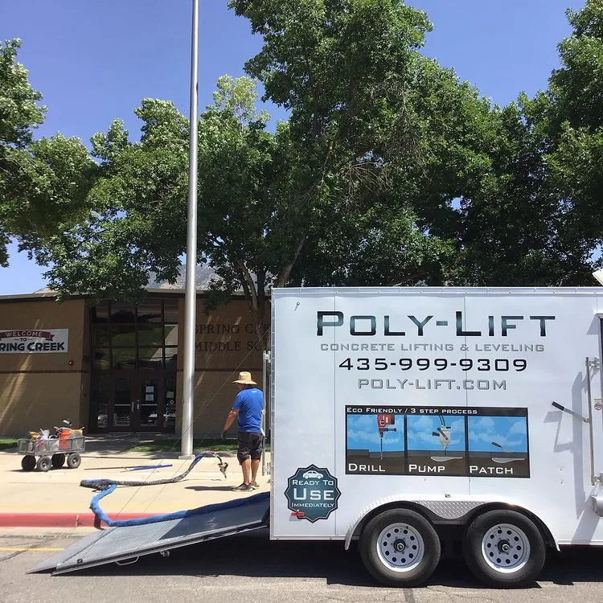

Share this Article
Concrete is one of the most widely-used building materials in the world. This material is popular because it is inexpensive, durable, and incredibly strong – but sometimes, things go wrong. Slabs can shift causing uneven surfaces, which can be unsightly or even dangerous. One solution to this issue is to use concrete lifting foam to level things out.
High-density lifting foam allows you to avoid digging up, removing, and re-pouring cement to correct issues. It is far cheaper, easier, and less intrusive than renovations – and this approach is quite popular. According to a recent study, the use of polyurethane concrete lifting foam is predicted to grow by over 9% by 2022 – and the market itself will exceed $6.22 billion next year.
But the real question is how effective is concrete lifting foam
Let’s dive in.
First, it is important to understand what causes concrete slippage and situations where lifting foam can be used.
One of the most common reasons that concrete will slip or move is due to an unstable foundation. Unsupported spaces under the ground may crumble or shift over time – which can cause the concrete above to crack and fall.
Another issue that will lead to concrete slippage is pressure from gravity, foot traffic, and constant weights. Although concrete is very strong, its compression strength decreases as time goes on. Most commercial-grade concrete’s rating is measured over the course of just 28 days. Repeated pressure will slowly wear away layers of the concrete, decreasing its strength.
Natural occurrences can cause cement slabs to shift, such as temperature changes, plate shifts, or even tree roots. You will see this quite often on sidewalks or cement driveways. Some slabs will be several inches higher than others or tilted at odd angles.
Polyurethane concrete lifting foam
(also called PolyLift or Polyjacking) is a strong chemical solution that creates a high-pressure foam strong enough to push concrete back into place. To insert the foam into the correct areas, a few holes may need to be drilled into the concrete. These can be as small as a penny in diameter.
Next, technicians will insert concrete lifting foam pumps into these holes. Polymer liquid is used inside the pumps to create polyurethane lifting foam which is funneled under the base of the concrete.
This creates enough pressure to lift the slabs back into place. The pumps are then removed and the small holes are re-filled with grout or concrete. All in all, this process takes less than an hour and the concrete can be used again as soon as the grout is dried.
This type of foam is strong enough to use to support many types of concrete structures.
Most state DOTs
(Departments of Transportation) only allow polyurethane concrete lifting for correcting concrete roads.
It is also commonly used on:
- Sidewalks
- Home foundations
- Driveways
- Cement stairs
- Patios
- Concrete support beams
- Pool decks
- Garage floors
Polyurethane foam can also be inserted to fill any voids that have formed beneath the surface of the concrete.
Depending on the grade used, polyurethane lifting foam can support hundreds of thousands of pounds of weight. Some higher commercial grade foam is even rated to support millions of pounds.
Since this type of foam is made from synthetic materials, it will not break down or wear away. So, it can essentially be a permanent solution in some circumstances. However, if the soil beneath shifts or erodes again, it can cause the concrete and foam to slip.
One way to ensure that concrete lifting foam stays in place is to keep the area as dry as possible. It may be wise to install drainage points to redirect water streams from the base of the concrete.
Polyurethane lifting foam is an incredibly affordable solution. It will generally amount to just half the cost of how much it would be to replace the broken concrete. You can also get a free estimate for the total project cost beforehand.
If your property in the Logan, Utah area has uneven or cracked concrete, get in touch with our team at Poly-Lift Concrete Lifting & Piering. We specialize in polyurethane lifting foam for concrete correction. We also offer foundation repair and push piering services!
You can reach out to us online for a free estimate or give us a call at 435-999-9309!
How Much Does It Cost to Repair a Foundation?
When homeowners start to notice signs of foundation damage, acting quickly is essential. Even small cracks and signs ...
Insulating Concrete Block Walls with Core Foam Masonry Foam Insulation®
Concrete block walls are a popular choice for both commercial and residential construction projects due to their strength, ...
Why Do Foundations Sink? What You Need to Know About Sinking Foundation Repair
It sounds alarming, but it’s incredibly normal for any home to move a bit as it settles into ...
From our jobs

